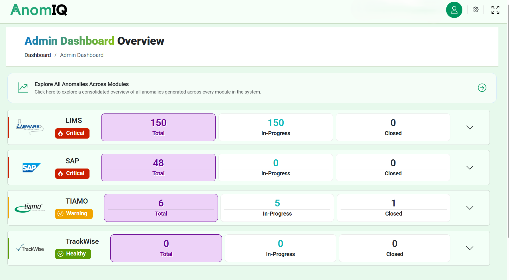

AnomIQ is Pivot Path's audit-trail monitoring platform. It reviews your CDS and Non-CDS systems continuously and acts on anomalies through business rules you configure.
From audit-trail data to compliance intelligence.
It turns the audit trails your systems already produce into a live signal your quality and IT teams can act on, before an inspector finds the gap. Three things follow.
Continuous review flags a data-integrity issue the moment it appears, not weeks later at the next audit cycle.
A configured business rule can act on the spot, placing a hold on the batch in SAP so an out-of-specification result never reaches production.
Every detection, action and release is role-based and traceable end to end, ready to show in inspection.
Reductions compared with periodic, sampled audit-trail review.
AnomIQ brings the compliance status of your CDS and Non-CDS systems into a single dashboard, ranked by severity, so leaders can see where risk is building and direct attention to it.

The AnomIQ dashboard: anomaly status across every connected system, by severity.
Detection is only half the job. When a signal matches one of your business rules, AnomIQ takes the response you configured, from raising an alert to placing a protective hold on the target system. An out-of-specification result in a CDS system can block that batch in SAP before it moves to production.
The rules are yours to set, versioned and specific to each system and process. The action is automatic. Releasing a hold stays with a qualified reviewer.
Define which anomaly, on which system, triggers which response. No code, and every rule is versioned.
From an alert or routed task to a hold on the target system, for example blocking a batch in SAP the moment the rule matches.
Automated actions are protective and fail-safe. Lifting a hold and closing the anomaly stay with your reviewers, and every step is logged.
AnomIQ detects, governs and reviews on one platform, so a signal becomes a defensible record without leaving the system it started in.
Set business rules for which anomaly triggers which response, from an alert to a hold on the target system. Noise falls away.
Role-based access and end-to-end traceability produce records you can defend in an inspection.
Audit trails are watched continuously, not sampled, with triage that bridges IT operations and quality.
Works alongside systems such as
LIMS (LabWare) Empower TIAMO SAP TrackWise Digital Historian / MES and a growing list of systemsBuilt for validated, regulated use
21 CFR Part 11 EU Annex 11 ALCOA+ ISO 27001 & 27701AnomIQ is built and run on PivotOS, the validated GxP cloud foundation.
Periodic review reads a sample of the audit trail weeks after the fact, so an anomaly becomes a finding at your next inspection. By then the batch has moved. AnomIQ reads every entry as it happens, and acts before the data goes anywhere.
Sampled, weeks apart
Continuous, every entry
The same anomaly: found weeks later at audit, or caught and held the moment it appears.
Two views from the platform: every anomaly tracked from detection to close, and the sites, systems and access governed behind it.
AnomIQ reviews audit-trail activity at a scale no team can watch by hand and flags what matters. Your configured rules decide the response, and your reviewers assess and release every hold. The detection runs on PivotAI, the AI layer inside PivotOS.
Your data stays isolated, never shared across customers, and is never used to train foundation models.
Continuous monitoring across every connected system, far beyond periodic sampling.
Every flagged anomaly is assessed and closed by your qualified reviewers.
Each detection carries its source and evidence, captured in a traceable record.
Nothing critical is released without a human reviewer in the chain.
Every anomaly AnomIQ detects and every decision your reviewers make is timestamped and logged, ready to show on demand. That is the difference between finding a gap at audit and having already closed it.
Read the AI Trust Centre for how we govern AI in regulated work.
We will show continuous detection and the audit trail on your own systems.